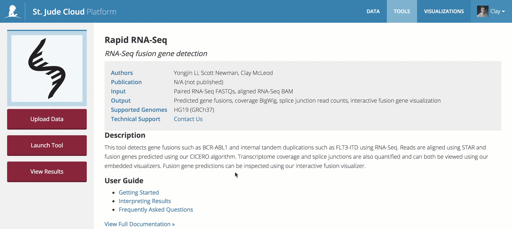
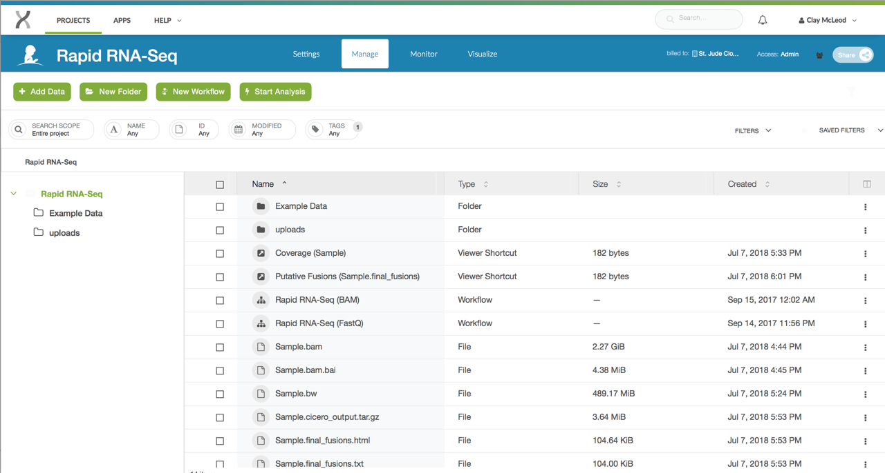

Rapid RNA-Seq Fusion Detection
| Authors | Scott Newman, Clay McLeod, Yongjin Li |
| Publication | N/A (not published) |
| Technical Support | Contact Us |
Fusion genes are important for cancer diagnosis, subtype definition and targeted therapy. RNASeq is useful for detecting fusion transcripts; however, computational methods face challenges to identify fusion transcripts due to events such as internal tandem duplication (ITD), multiple genes, low expression, or non-templated insertions. To address some of these challenges, St. Jude Cloud offers "Rapid RNA-Seq", an end-to-end clinically validated pipeline that detects gene fusions and ITDs from human RNA-Seq.
Overview
Inputs
The input can be either of the two entries below, based on whether you want to start with FastQ files or a BAM file.
| Name | Description | Example |
|---|---|---|
| Paired FastQ files | Gzipped FastQ files generated by human RNA-Seq | Sample_R1.fastq.gz and Sample_R2.fastq.gz |
| BAM file | Aligned reads file from human RNA-Seq | Sample.bam |
Caution
If you provide a BAM file to the pipeline, it must be aligned to GRCh37-lite. Running a BAM aligned to any other reference genome is not supported. Maybe more importantly, we do not check the genome build of the BAM, so errors in computation or the results can occur. If your BAM is not aligned to this genome build, we recommend converting the BAM back to FastQ files using Picard's SamToFastq functionality and using the FastQ version of the pipeline.
Outputs
The Rapid RNA-Seq pipeline produces the following outputs:
| Name | Description |
|---|---|
| Predicted gene fusions (.txt) | File containing putative gene fusions. |
| Coverage file (.bw) | bigWig file containing coverage information. |
| Splice junction read counts (.txt) | Read counts for the splice junction detected. |
| Interactive fusion visualization | Fusion visualization produced by ProteinPaint. |
| Interactive coverage visualization | Coverage visualization produced by ProteinPaint. |
Process
- The raw sequence data is aligned to GRCh37-lite using standard STAR mapping.
- A coverage bigWig (.bw) file is produced to allow the user to assess sample quality across the genome.
- Two gene fusion detection algorithms are run in parallel.
- The Fuzzion (Rice et al. unpublished data) fusion detection algorithm is run to provide high sensitivity for recurrent gene fusions.
- The RNAPEG (Edmonson et al. unpublished data) splice junction read counting algorithm is run to quantify read counts for splice junctions. These splice junction read counts are then used by Cicero (Li et al. unpublished data) to detect putative gene fusions.
- Custom visualizations for putative gene fusions and genome coverage are produced by ProteinPaint.
Mapping
We use the STAR aligner to rapidly map reads to the GRCh37 human reference genome. This step generally takes around one hour to complete assuming approximately 55-75 million paired reads are supplied.
Coverage
Internally developed scripts calculate the coverage of mapped reads genome wide. The resulting bigWig file can be viewed in ProteinPaint or used for quality control.
Splice junction read quantification
We use our RNAPEG software to quantify reads spanning known and novel splice junctions. RNAPEG also corrects improper mappings at splice junction boundaries for more accurate definition of novel splice junctions. The resulting junctions file can be viewed along with the coverage bigWig file to gain insights into gene expression and splicing patterns
Genome-wide fusion prediction
We developed an assembly-based algorithm CICERO (Clipped-reads Extended
for RNA Optimization) that is able to extend the read-length spanning
fusion junctions for detecting complex fusions. CICERO finds clipped
reads and junction spanning reads, assembles them into a contig and maps
the contig back to the reference genome. Mapped contigs are then
annotated and filtered. Those with potential genic effects including
gene fusion, ITD, readthrough or circular RNA are reported in the
final_fusions.txt file. An interactive version of this file with
predictions sorted by quality can be inspected with the ProteinPaint
interactive fusion viewer.
An abstract describing CICERO was presented at ASHG, 2014: http://www.ashg.org/2014meeting/abstracts/fulltext/f140120024.htm
Low stringency fusion gene "Hotpot" search
We have observed that certain fusions such as KIAA1549-BRAF in low-grade
glioma have apparently limited read support in the bam file — either due
to low expression or low tumor purity. In these cases, we use a
secondary tool, FUZZION, that performs fuzzy matching for known fusion
gene junctions for every read in the bam file (both mapped and
unmapped). FUZZION can recover even a single low quality read
potentially supporting a known fusion gene junction. The FUZZION output
is a simple text file with read IDs and sequences supporting a
particular gene fusion. The fusion point is indicated with square
brackets [].
Getting started
Caution
This pipeline assumes GRCh37-lite coordinates. If your BAM is not aligned to this genome build, we recommend converting the BAM back to FastQ files using Picard's SamToFastq functionality.
To get started, you need to navigate to the Rapid RNA-Seq tool page. You'll need to click the "Start" button in the left hand pane. This creates a cloud workspace in DNAnexus with the same name as the tool. After this, you will be able to upload your input files to that workspace.

Note
If you can't see the "Start" button, one of these two scenarios is likely the case:
- You see three buttons on the left sidebar instead of one. In this case, you've already clicked the "Start" button previously, and a cloud workspace has already been created for you. In this case, you're good! You can move on to the next section.
- If you cannot see any buttons on the left side, you probably have not logged in yet. If you see a sentence that says "Log in to launch this tool", simply login and try again.
If neither of these are the case and you still can't click "Start", contact us.
Uploading data
The Rapid RNA-Seq pipeline takes either a paired set of Gzipped FastQ files or a GRCh37-lite aligned BAM from human RNA-Seq. You can upload your input file(s) using the data transfer application or by uploading them through the command line. Both of the guides linked here will contain more details on how to upload data using that method, so we defer to those guides here.
Running the tool
Once you've uploaded data to your cloud workspace, click "Launch Tool" on the tool's landing page. A dropdown will present the different presets for running the workflow. Here, you can select whether you wish to start with FastQ files or a BAM file.

Hooking up inputs
Next, you'll need to hook up the FastQ files you uploaded in
the upload data section. In this example,
we are using the FastQ version of the pipeline, so you can
hook up the inputs by clicking on the Fastq/R1 and Fastq/R2
slots and selecting the respective files. If you are using
the BAM-based workflow, the process is similar.

Starting the workflow
Once your input files are hooked up, you should be able to start the workflow by clicking the "Run as Analysis..." button in the top right hand corner of the workflow dialog.

Tip
If you cannot click this button, please ensure that all of the inputs are correctly hooked up (see hooking up inputs).
If you're still have trouble, please contact us and include a screenshot of the workflow screen above.
Monitoring run progress
Once you have started one or more Rapid RNA-Seq runs, you can safely close your browser and come back later to check the status of the jobs. To do this, navigate to the tool's landing page. Next, click "View Results" then select the "View Running Jobs" option. You will be redirected to the job monitoring page. Each job you kicked off gets one row in this table.

You can click the "+" on any of the runs to check the status of individual steps of the Rapid RNA-Seq pipeline. Other information, such as time, cost of individual steps in the pipeline, and even viewing the job logs can accessed by clicking around the sub-items.

Tip
Power users can view the DNAnexus Job Monitoring Tutorial and the DNAnexus Command Line Tutorial for Job Monitoring for advanced capabilities for monitoring jobs.
Analysis of results
Each tool in St. Jude Cloud produces a visualization that makes understanding results more accessible than working with Excel spreadsheets or tab delimited files. This is the primary way we recommend you work with your Rapid RNA-Seq results. We also include the raw output files for you to dig into if the visualization is not sufficient to answer your research question.
Finding the raw results files
Navigate to the tool's landing page. In the left hand pane, click "View Results" then "View Results Files". You will be taken to the filesystem view your cloud workspace. This is similar to your the filesystem on your computer, and you can do many common operations such as deleting, renaming, and moving files.

Navigating Results
Raw result files
Navigate to your tool's description page (for instance, Rapid RNA-Seq's description page is here). You should see a screen similar to the one in the screenshot below. In the left hand pane, select "View Results Files".

You should now be in the tool's workspace with access to files that you uploaded and results files that are generated. How/where the result files are generated are specific to each pipeline. Please refer to your individual pipeline's documentation on where the output files are kept.

Custom visualization results
Navigate to your tool's description page (for instance, Rapid RNA-Seq's description page is here). You should see a screen similar to the one in the screenshot below. In the left hand pane, select "Visualize Results".

You should now see a list of visualization files like the ones shown below.

Interpreting results
The complete output file specification is listed in the overview section of this guide. Here, we will discuss each of the different output files in more detail.
- Predicted gene fusions: The putative gene fusions will be
contained in the file
[SAMPLE].final_fusions.txt. This file is a tab-delimited file containing many fields for each of the predicted SV. The most important columns are the following.
| Field Name | Description |
|---|---|
sample |
Sample name |
gene* |
Gene name |
chr* |
Chromosome name |
pos* |
Genomic Location |
ort* |
Strand |
reads* |
Supporting reads |
medal |
Estimated pathogenicity assessment using St. Jude Medal Ceremony |
- Coverage file: A standard bigWig file used to describe genomic read coverage.
- Splice junction read counts: A custom file format describing the junction read counts. The following fields are included in the tab-delimited output file.
| Field Name | Description |
|---|---|
junction |
Splice junction in the TCGA format "chrX:start:+,chrX:end,+". "start" and "end" are the 1-based position of the last mapped nucleotide before the skip and the first mapped nucleotide after the skip (i.e. the last base of the previous exon and the first base of the next exon). Note that in .bed output these coordinates will be different, see the .bed output section below. The "+" is currently hardcoded, though this may change in the future. |
count |
Raw count of reads supporting the junction. During correction counts for ambiguous junctions can be combined, though obviously these additional reads will not be visible in the raw BAM file. |
type |
Either "known" (matching a reference junction) or "novel" (not observed in the reference junction collection). |
genes |
Gene symbols from the junction calling process. These still need work in the raw junction calling process, it's recommended to use the "annotated" output files instead which assign matching HUGO gene symbols based on the UCSC refGene table. |
transcripts |
List of known transcript IDs matching the junction. |
qc_flanking |
Count of supporting reads passing flanking sequence checks (junctions observed adjacent to read ends require 18+ nt of flanking sequence, otherwise 10+ nt). |
qc_plus |
Count of supporting reads aligned to the + strand. |
qc_minus |
Count of supporting reads aligned to the - strand. |
qc_perfect_reads |
Count of supporting reads with perfect alignments (no reference mismatches of quality 15+, indels, or soft clips). |
qc_clean_reads |
Count of supporting reads whose alignments are not perfect but which have a ratio of <= 5% of reference mismatches of quality 15+, indels, or soft clips relative to the count of aligned bases on both the left and right flanking sequence. Note: qc_clean_reads does NOT include qc_perfect_reads: to get a count of "perfect plus pretty good" reads the two values must be added together. |
Known issues
Adapter contamination
This pipeline does not, at present, remove adapter sequences. If the sequencing library is contaminated with adapters, CICERO runtimes can increase exponentially. We recommend running FastQ files through a QC pipeline such as FastQC and trimming adapters with tools such as Trimmomatic if adapters are found.
High coverage regions
Certain cell types show very high transcription of certain loci, for example, the immunoglobulin heavy chain locus in plasma cells. The presence of very highly covered regions (typically 100,000-1,000,000+ X) has an adverse effect on CICERO runtimes. Presently, we have no good solution to this problem as strategies such as down-sampling may reduce sensitivity over important regions of the genome.
Interactive Visualizations Exon vs Intron Nomenclature
When a codon is split over a fusion gene junction, the annotation software marks the event as intronic when really, the event should be exonic. We are working to fix this bug. In the mean time, if a fusion is predicted to be in frame but the interactive plot shows "intronic", we suggest the user blat the contig shown just below to clarify if the true junction is either in the intron or exon.
Frequently asked questions
None yet! If you have any questions not covered here, feel free to reach out on our contact form.